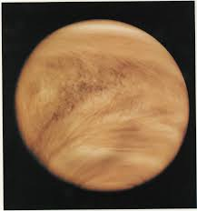

|
To the naked eye, Venus appears as a white point of light brighter than any other planet or star (apart from the Sun). The planet's mean apparent magnitude is −4.14 with a standard
deviation of 0.31. The brightest magnitude occurs during the crescent phase about one month before or after an inferior conjunction. Venus fades to about magnitude −3 when it is backlit by the Sun.
The planet is bright enough to be seen in broad daylight, but is more easily visible when the Sun is low on the horizon or setting. As an inferior planet, it always lies within about 47° of the Sun.
Venus "overtakes" Earth every 584 days as it orbits the Sun. As it does so, it changes from the "Evening Star", visible after sunset, to the "Morning Star", visible before sunrise. Although Mercury,
the other inferior planet, reaches a maximum elongation of only 28° and is often difficult to discern in twilight, Venus is hard to miss when it is at its brightest. Its greater maximum elongation means
it is visible in dark skies long after sunset. As the brightest point-like object in the sky, Venus is a commonly misreported "unidentified flying object".
Venus is in Earth's sky bright enough to be visible without aid, making it one of the classical planets that human cultures have known and identified throughout history, particularly for being the third
brightest object in Earth's sky after the Sun and the Moon. Because the movements of Venus appear to be discontinuous (it disappears due to its proximity to the sun, for many days at a time, and then
reappears on the other horizon), some cultures did not recognize Venus as a single entity; instead, they assumed it to be two separate stars on each horizon: the morning and evening star
The ancient Greeks initially believed Venus to be two separate stars: Phosphorus, the morning star, and Hesperus, the evening star. Pliny the Elder credited the realization that they were a single object
to Pythagoras in the sixth century BC, while Diogenes Laërtius argued that Parmenides (early fifth century) was probably responsible for this discovery. Though they recognized Venus as a single object,
the ancient Romans continued to designate the morning aspect of Venus as Lucifer, literally "Light-Bringer", and the evening aspect as Vesper, both of which are literal translations of their traditional Greek names.
|
|
|
|
|
|
|
|

Venus, pictured centre-right, is always brighter than all other planets or stars
at their maximal brightness, as seen from Earth. Jupiter is visible at the top of the image.

|
|
ORBIT
Venus orbits the Sun at an average distance of about 0.72 AU (108 million km; 67 million mi), and completes an orbit every 224.7 days. Although all planetary
orbits are elliptical, Venus's orbit is currently the closest to circular, with an eccentricity of less than 0.01.Simulations of the early solar system
orbital dynamics have shown that the eccentricity of the Venus orbit may have been substantially larger in the past, reaching values as high as 0.31 and
possibly impacting early climate evolution
All planets in the Solar System orbit the Sun in an anticlockwise direction as viewed from above Earth's north pole. Most planets rotate on their axes in an
anticlockwise direction, but Venus rotates clockwise in retrograde rotation once every 243 Earth days—the slowest rotation of any planet. This Venusian sidereal
day lasts therefore longer than a Venusian year (243 versus 224.7 Earth days). Slowed by its strong atmospheric current the length of the day also fluctuates by up
to 20 minutes. Venus's equator rotates at 6.52 km/h (4.05 mph), whereas Earth's rotates at 1,674.4 km/h (1,040.4 mph).Venus's rotation period measured with Magellan
spacecraft data over a 500-day period is smaller than the rotation period measured during the 16-year period between the Magellan spacecraft and Venus Express visits,
with a difference of about 6.5 minutes. One Venusian year is about 1.92 Venusian solar days.
ROTATION
Venus may have formed from the solar nebula with a different rotation period and obliquity, reaching its current state because of chaotic spin changes caused by planetary
perturbations and tidal effects on its dense atmosphere, a change that would have occurred over the course of billions of years. The rotation period of Venus may represent
an equilibrium state between tidal locking to the Sun's gravitation, which tends to slow rotation, and an atmospheric tide created by solar heating of the thick Venusian atmosphere.
The 584-day average interval between successive close approaches to Earth is almost exactly equal to 5 Venusian solar days (5.001444 to be precise), but the hypothesis of a spin-orbit
resonance with Earth has been discounted
The orbital space of Venus has a dust ring-cloud,with a suspected origin either from Venus–trailing asteroids, interplanetary dust migrating in waves, or the remains of the Solar System's
original circumstellar disc that formed the planetary system
|
|
|
|
|
|
|
|
Venus is the second planet from the Sun, making a full orbit in about 224 days

Venus and its rotation in respect to its revolution.
|